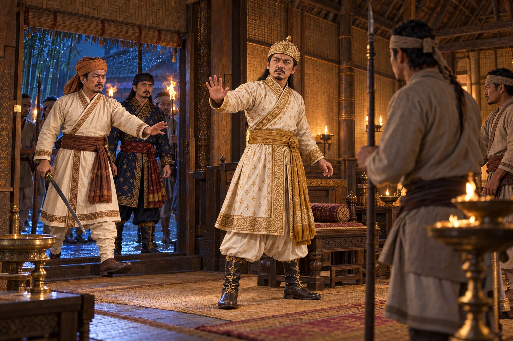

Palace Coup Against Udayaditya Singha
November 1672 · Six kings in nine years

Angered by the king's devotion to the ascetic Paramananda Sanyasi and his jailing of Vaishnava mahantas, Debera Hazarika and the king's brother Sarugohain storm the palace at midnight. Udayaditya is taken to Charaideo and killed; his brother takes the throne as Ramdhwaj Singha.
Painting depicts the midnight deposition, not the later execution at Charaideo.
People: Udayaditya Singha (Sunyatphaa), Debera Borbarua, Ramdhwaj Singha (Suklamphaa)
Open this scene in the interactive archive · Follow this event on MAP